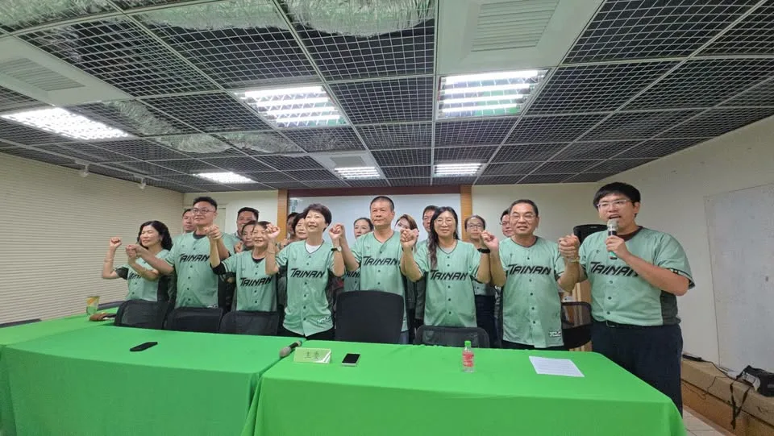

李四川hammer__lee

@hammer__lee:有人來看海，我看海，也看這條路能不能再往前接。 東北角這條海岸步道，可以一路接到淡水。 可以騎車，也可以走路。 我拍的不只是海景，是藍圖。 風景是老天給的，路是人接的。
Posts
@hammer__lee:有人來看海，我看海，也看這條路能不能再往前接。 東北角這條海岸步道，可以一路接到淡水。 可以騎車，也可以走路。 我拍的不只是海景，是藍圖。 風景是老天給的，路是人接的。

跟著蔡其昌逛台中洲際！球場還能怎麼更好？⚾️


@a_chun1973:🌊 海線媳婦何欣純，推出 「4321海線大進擊」！ 我是清水媳婦，也是海線媳婦。每次走訪海線，都能感受到鄉親對交通、建設與地方發展的期待。 今天，我和海線夥伴共同提出海線進擊政策： 🚆 4條軌道加速 藍線拚通車、橘線動工延伸清水、海線鐵路雙軌高架化、舊貨運鐵道轉型觀光鐵道。 🛣️ 3條交通命脈打通 甲埔大道延伸、國道4號延伸台中港、生活圈4號道路闢建。 ✈️🚢 2大海空港升級 升級台中機場、活化台中港與梧棲漁港，帶動海線觀光與產業。 🏆 打造第1的海線 推動台中港盈餘回饋地方，讓海線產業、交通、文化、觀光一起升級！ 4321，海線大進步、大進擊！💪🌊


@su.chiaohui:前陣子我到永和，和一群優秀的文字工作者一起吃美食、聊聊天！ 台灣有太多厲害的創作者與故事，不管是以漫畫重現台灣百年茶路，還是透過小說把在地滋味與文化推向國際，我希望能做大家的最強後盾，替大家找資源、搭建舞台。 我會繼續努力，讓更多好故事與人才被更多人看見！

你們越挺我，我就越拚命！ 我們一起串起山城，連結臺中💪 在東勢看到上千位山城鄉親齊聚，心裡真的只有滿滿的感恩。從政一路走來，山城每一個建設、每一次突破，都是因為有大家當我的最強後盾。 這幾年，我們一起催生 #國道四號豐潭段 、拚 #東豐快復工，目的就是要打通交通命脈。未來我們還要結合 #客家與原民文化、溫泉觀光及在地農特產，讓遊客造訪山城、促進地方繁榮，拚建設一條心、做到底！ 感謝古秀英議員服務團隊議員、吳振嘉 振興山城 有嘉在長期攜手深耕，以及在地農會與各界前輩的全力相挺。山城的大團結，就是臺中迎向黃金十年的最大動力。 懇託各位山城鄉親，年底選戰我們全力衝刺，讓市長高票當選、議員全壘打、基層服務不間斷，我們一起為家鄉拚出更好的未來！ #臺中啟程 #打造旗艦城 #山城 #農家子弟

#梧棲漁港 是中部重要的觀光休閒漁港，先前我成功爭取中央六千多萬元補助，推動漁港整修與活化。 未來梧棲漁港將結合食魚教育、親子空間、休閒咖啡館，串聯周邊觀光景點，讓漁港不只是買海鮮，更成為大家休閒的好去處！ #心存大台中 #市長換欣_台中創新

Warmly welcomed Chairman Baba Nobuyuki and the Ishin delegation to Taichung! 🇹🇼🇯🇵 From parliamentary to city diplomacy, we’re strengthening Taichung–Osaka ties and expanding cooperation in AI, smart governance, and tourism. Together for a stronger Taiwan–Japan partnership! 🤝

老朋友臺中相聚！ 推動臺中與大阪深化合作 🇯🇵🤝🇹🇼 今天非常榮幸能在我的家鄉臺中，款宴日本維新會馬場伸幸會長、藤田文武共同代表一行老朋友！ 開席前，我特別向熊本地震受災民眾表達關懷。非常感謝維新會長期在日本國會堅定挺臺、關心臺灣參與WHA與CPTPP，臺日總在關鍵時刻給予彼此最溫暖的支持。席間，我也特別送上2024年我們在APPU大會相聚時的合照，定格這份跨越國界的珍貴情誼。 維新會發源於大阪，臺中則是我的家鄉，兩座城市都擁有堅實產業基礎與創新活力。我也誠摯邀請馬場會長在大選過後能再次造訪，讓我有機會盡地主之誼，帶老朋友深入感受臺中的風土人情與城市魅力。期待未來推動臺中與大阪在產業AI化、智慧城市治理、青年與觀光等面向深入合作，從國會外交延伸至城市外交，攜手共創雙贏！祝福臺日友情長長久久！ #臺日友好 #日本維新會 #臺中大阪 #國會外交 #城市外交 #國會外交 #能在地能國際

東豐快速道路，便利台中山城東勢往豐原之間的聯繫，大大縮短市民往來時間，東勢到石岡段即將通車，台中好山好水，觀光、農產、好風景更值得大大行銷，讓台中各區域更好更發展！！ 新台中，交給何欣純！！

Unboxing New Taipei Vol. 1: Right Next Door

有人來看海，我看海，也看這條路能不能再往前接。 東北角這條海岸步道，可以一路接到淡水。 可以騎車，也可以走路。 我拍的不只是海景，是藍圖。 風景是老天給的，路是人接的。
@schuanglawyer:這是一個情境題。 如果你是一位市長，遇到愈來愈多年輕人、外地遊客慕名而來，甚至吸引國際旅客專程前往的熱門景點，你會怎麼做？ 一般人當市長，會用心經營、大力推廣。 絕對不是放任合約到期、消極擺爛。 很遺憾地，從明天起，桃園神社的原經營團隊合約期滿撤離，神社將正式面臨營運空窗期。而且這不是突發狀況，桃園市政府早就知道委外契約即將到期。 我要問張善政，為什麼沒有提前招商、做好交接？任由好不容易打造的城市亮點，苦心累積的成果瞬間歸零。張善政的消極與擺爛，再次暴露了他對地方觀光和文化資產的漫不在乎！ 更何況桃園神社早就不只是普通的觀光景點，而是珍貴的文化資產。 面對桃園神社的未來，我上任後，會積極尋找好的團隊，延續過去成功的經驗，讓在地文化一點一滴累積成城市品牌，和市民一起重新擦亮桃園的名字！

🌊 海線媳婦何欣純，推出 #4321海線大進擊！ 我是清水媳婦，也是海線媳婦。每次走訪海線，都能感受到鄉親對交通、建設與地方發展的期待。 今天，我和海線夥伴共同提出「4321海線大進擊」： 🚆 4條軌道加速 藍線拚通車、橘線動工延伸清水、海線鐵路雙軌高架化、舊貨運鐵道轉型觀光鐵道。 🛣️ 3條交通命脈打通 甲埔大道延伸、國道4號延伸台中港、生活圈4號道路闢建。 ✈️🚢 2大海空港升級 升級台中機場、活化台中港與梧棲漁港，帶動海線觀光與產業。 🏆 打造第1的海線 推動台中港盈餘回饋地方，讓海線產業、交通、文化、觀光一起升級！ 4321，海線大進步、大進擊！💪🌊

前陣子我到永和，和一群優秀的文字工作者一起吃美食、聊聊天！ 台灣有太多厲害的創作者與故事，不管是以漫畫重現台灣百年茶路，還是透過小說把在地滋味與文化推向國際，我希望能做大家的最強後盾，替大家找資源、搭建舞台。 我會繼續努力，讓更多好故事與人才被更多人看見！

@zenolai:隆來看歌仔戲！ 這次瑞隆學做戲，跤步手路猶無夠水氣，請大家多多包涵，來給瑞隆拍噗仔👏
來到謝國樑市長在基隆做出來的親子樂園。來玩的孩子，有的是長輩從汐止、從台北一路帶過來的。 我跟國樑市長的想法一樣。大型室內親子館「新北BabyBoss」，我已經宣布過了，接下來，是讓每個新北的孩子都到得了。 說實在，孩子玩得開心，家長才放得下心。


今天是 #國民體育日 ，全齡動起來！ 高雄擁有得天獨厚的陽光與豐富的運動場域，無論是河畔慢跑、公園太極，還有各種球類運動的場地。要成為一座全齡宜居的運動城市，不只要年輕人有地方揮灑熱情，更要讓長輩能動得安心、動得健康！我以「全民普及、接軌國際、產業升級」提出四大政策： 一、 區區匹克球，高雄動起來 將近年風靡全球的「匹克球」打造為高雄市民的國民運動！活化高雄市內閒置羽、網球場，改建為多功能球場可以一起使用，並盤點夢時代商場、幸福公園與捷運站空置空間，打造可全天候揮拍基地；同時訂定「高雄匹克球日」，定期推廣免費試打，與學校、長照機構合作推動，落實跨世代全民樂活！也提供誘因鼓勵匹克球相關產業進駐高雄。 二、引進 HYROX，高雄接軌國際 爭取全球爆紅的「HYROX 體能賽」，並以全台首座官方認證的三民運動中心為據點，串聯在地健身與運動觀光產業，將高雄打造成亞太體能訓練重鎮。 三、發展賽事觀光，催生高雄運動產業鏈 以國際級賽事與大型體育活動為核心，串聯在地飯店、餐飲、交通與運動器材製造業，打造「賽事＋觀光」的經濟新引擎！透過高吸引力的體育盛事吸引國內外選手與觀眾，擴大賽事溢出效益，為高雄創造永續的運動產業價值。 四、爭取馬拉松認證 高雄國際馬拉松過去有「全台灣最友善的城市馬拉松」之稱，未來要持續朝國際化發展。我將積極爭取世界田徑總會World Athletics Road Race Label認證，打造具有高雄特色的國際標籤賽事（例如高雄富邦馬拉松），吸引世界頂尖選手與國際跑者來高雄。讓一場馬拉松不只是賽事，更成為城市品牌，帶動觀光、消費與地方經濟，讓世界透過運動看見高雄。 全民健康是高雄最強大的心跳，不只要讓高雄所有人能盡情揮灑汗水，更要讓高雄成為國際賽事的殿堂、與國際接軌。一步一腳印，讓「#台灣運動首都」真正落實在高雄！


大家敲碗的「台南隊」球衣，正式上線！ 從台南400年，到科技新城、農漁大城，台南一路走來，始終團結、堅持、向前。 這一次，把對台南的認同穿在身上。一起穿上DPP台灣狼《台南》聯名款城市球衣，為台南隊加油，也為台灣一起拚！ 📅 限時訂購至9/13中午12點 📦 預計10/11開始陸續出貨 #線上訂購網址在留言處 #台南隊 #團結堅持向前 #台南400年

開箱新北小遊戲！你不知道的好所在✨ 因為行程很多，我每天在新北到處跑，常會經過充滿驚喜的角落，我都會想：「我一定要讓更多人知道這裡！」 所以這次，我想用一個新的方式，邀請大家真的打開新北、重新認識新北。我邀請了8位知名的插畫家、漫畫家，和我一起打造了「開箱新北」藏寶計劃！ 【開箱新北第一彈：你家隔壁】 很多時候，熟悉的風景裡，反而藏著我們忽略的故事。 第一彈的藏寶企劃，我攜手人氣創作者 HOM 與小心臟LittleHeart，設置了5個藏寶點，要帶大家重新認識那些「以為很熟悉、其實不太了解」的日常角落。 大家快根據影片裡的線索找到我和 蔡英文 Tsai Ing-wen #小英總統 藏寶藏的地方，開箱寶盒！ 藏寶盒裡面有什麼？ 🎁水獺媽媽與HOM、小心臟限量「聯名壓克力鑰匙圈」（2款各3個，手腳慢就沒了！） 🎁水獺媽媽與HOM、小心臟獨家「聯名貼紙」（2款各10張） 🌟每位抵達的參加者可以領取「一份」小禮物唷～ 歡迎各位新北在地玩家，一起從你家隔壁開始，更深入地認識新北！

台北的山，不只有風景，也有城市的記憶。 ⠀ 打造亞洲第一觀光登山城，要串聯山徑、交通與文化路徑，讓大家走進山林，也重新認識台北。


隆來看歌仔戲！這次瑞隆學做戲，跤步手路猶無夠水氣，請大家多多包涵，來給瑞隆拍噗仔👏


One Cultural Trail, Weaving Together Taipei’s Stories; One Mountaineering Tourist Center, Buildin...

Giving More Great Stories and Talent the Spotlight!

大家敲碗的「台南隊」球衣，正式上線！ 從台南400年，到科技新城、農漁大城，台南一路走來，始終團結、堅持、向前。 這一次，把對台南的認同穿在身上。一起穿上DPP台灣狼《台南》聯名款城市球衣，為台南隊加油，也為台灣一起拚！
隆來看歌仔戲！ 這次瑞隆學做戲，跤步手路猶無夠水氣，請大家多多包涵，來給瑞隆拍噗仔👏
場館蓋得起來，比賽才裝得下。習慣養得起來，城市才跑得動。 國民體育日，新北，大家一起動起來。 蓋一座場館不難，難的是讓它天天有人用。 今天 9 月 9 日，是國民體育日，跟大家講幾件我想做的事。 第一，新北運動幣。 每人 500 元，一年 15 萬份。拿去買票看球、報名運動課、租借場地。 運動不是看看就好，要真的走進去，習慣才養得成。 第二，新北巨蛋城。 我們不缺人才，缺的是一座讓世界看見的舞台。 巨蛋城我要加速蓋起來，交通、住宿都接得上。 再去爭取 12 強、經典賽，讓冠軍戰在新北開打。 第三，水陸共融運動園區。 我要把「八里東海運動休閒中心」與「八里水上運動中心」接在一起，做成一個水陸共融的運動園區。 立槳、獨木舟、帆船都放進去。身障朋友、親子、老人家，都能一起下水。 新北有全台最多的 20 座國民運動中心，這些底子，是侯友宜市長打下來的基礎。 我接下來要做的，是讓每一座都天天有人走進去。

老朋友臺中相聚！ 推動臺中與大阪深化合作 🇯🇵🤝🇹🇼 今天非常榮幸能在我的家鄉臺中，款宴日本維新會馬場伸幸會長、藤田文武共同代表一行老朋友！ 開席前，我特別向熊本地震受災民眾表達關懷。非常感謝維新會長期在日本國會堅定挺臺、關心臺灣參與WHA與CPTPP，臺日總在關鍵時刻給予彼此最溫暖的支持。席間，我也特別送上2024年我們在APPU大會相聚時的合照，定格這份跨越國界的珍貴情誼。 維新會發源於大阪，臺中則是我的家鄉，兩座城市都擁有堅實產業基礎與創新活力。我也誠摯邀請馬場會長在大選過後能再次造訪，讓我有機會盡地主之誼，帶老朋友深入感受臺中的風土人情與城市魅力。期待未來推動臺中與大阪在產業AI化、智慧城市治理、青年與觀光等面向深入合作，從國會外交延伸至城市外交，攜手共創雙贏！祝福臺日友情長長久久！ #臺日友好 #日本維新會 #臺中大阪 #國會外交 #城市外交 #國會外交 #能在地能國際

@chen_tingfei:大家敲碗已久的台南隊球衣來了！⚾️💚 今天我在市黨部跟台南隊的議員夥伴們一起公布，「DPP台灣狼《台南》聯名款城市球衣」正式開放限時預購！ 這件球衣藏了滿滿的台南元素👀 衣身是台南市花「蝴蝶蘭」的紋路，下擺還藏著赤崁樓、奇美博物館、廟宇、虱目魚……大家拿到之後可以找找看，有多少台南元素？ 從400年古都，到結合文化、科技、農漁業的城市風貌，這些都是我們最驕傲的台南。 一起穿上Team Tainan吧！ 台南隊，準備上場！⚾️💪 PS:⏰ 限時預購到 9/13中午12點，想跟我們穿同款的不要錯過啦！ https://dpp-tainan.oen.tw

開箱新北小遊戲！你不知道的好所在✨ 因為行程很多，我每天在新北到處跑，常會經過充滿驚喜的角落，我都會想：「我一定要讓更多人知道這裡！」 所以這次，我想用一個新的方式，邀請大家真的打開新北、重新認識新北。我邀請了8位知名的插畫家、漫畫家，和我一起打造了「開箱新北」藏寶計劃！ 【開箱新北第一彈：你家隔壁】 很多時候，熟悉的風景裡，反而藏著我們忽略的故事。 第一彈的藏寶企劃，我攜手人氣創作者 @hom_comicart #HOM 與 @jeoyu #小心臟，設置了5個藏寶點，要帶大家重新認識那些「以為很熟悉、其實不太了解」的日常角落。 大家快根據影片裡的線索找到我和 @tsai_ingwen #小英總統 藏寶藏的地方，開箱寶盒！ 藏寶盒裡面有什麼？ 🎁水獺媽媽與HOM、小心臟限量「聯名壓克力鑰匙圈」（2款各3個，手腳慢就沒了！） 🎁水獺媽媽與HOM、小心臟獨家「聯名貼紙」（2款各10張） 🌟每位抵達的參加者可以領取「一份」小禮物唷 歡迎各位新北在地玩家，一起從你家隔壁開始，更深入地認識新北！

#南高雄後援會 正式成立！ 四年前不被看好，四年後，我走破四雙鞋、一步一步走遍高雄，心中更加堅定：南高雄值得更好的未來。 打造205兵工廠朝向「南高雄核心商業中心」、中央公園2.0「全齡休憩、點亮夜晚」，讓南高雄重新發光，我們一起實現改變！ 這一次，我不再雖敗猶榮，而會贏得光榮，帶領高雄實現「夢想海港，世界雄心」！